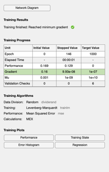

Create the XOR neural net with noisy data
Uses the Deep Learning Toolbox. See also feedforwardnet, zeros, randi, randn, configure, train, sim
Contents
Create the network
2 layers 2 inputs 1 output
net = feedforwardnet(2); % XOR Truth table a = [1 0 1 0]; b = [1 0 0 1]; c = [0 0 1 1]; % How many sets of inputs n = 600; % This determines the number of inputs and outputs x = zeros(2,n); y = zeros(1,n); % Create training pairs for k = 1:n j = randi([1,4]); x(:,k) = [a(j); b(j)]; y(k) = c(j); end net = configure(net, x, y); net.name = 'XOR'; net = train(net,x,y); a = a + 0.01*randn(1,4); b = b + 0.01*randn(1,4); c = sim(net,[a;b]); fprintf('\n a b c\n'); for k = 1:4 fprintf('%6.3f %6.3f %6.3f\n',a(k),b(k),c(k)); end % This only works for feedforwardnet(2); fprintf('\nHidden layer biases %6.3f %6.3f\n',net.b{1}); fprintf('Output layer bias %6.3f\n',net.b{2}); fprintf('Input layer weights %6.2f %6.2f\n',net.IW{1}(1,:)); fprintf(' %6.2f %6.2f\n',net.IW{1}(2,:)); fprintf('Output layer weights %6.2f %6.2f\n',net.LW{2,1}(1,:)); fprintf('Hidden layer activation function %s\n',net.layers{1}.transferFcn); fprintf('Output layer activation function %s\n',net.layers{2}.transferFcn);
a b c
1.010 1.015 0.016
-0.009 -0.008 0.495
1.012 -0.011 0.495
-0.006 1.010 1.008
Hidden layer biases -5.965 -5.787
Output layer bias -0.045
Input layer weights 0.50 5.95
-0.26 5.81
Output layer weights -1.41 1.37
Hidden layer activation function tansig
Output layer activation function purelin
 Copyright
Copyright (c) 2019, 2022 Princeton Satellite Systems, Inc. All rights reserved.